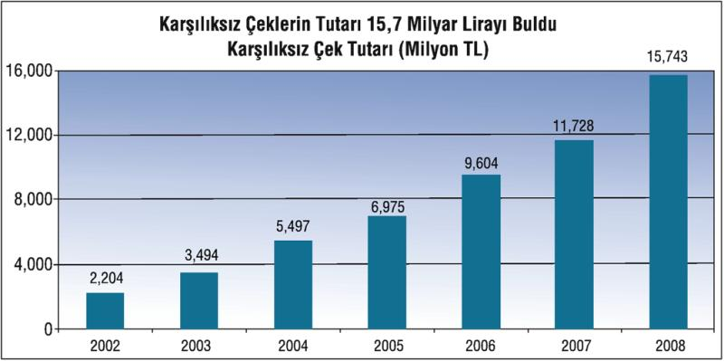
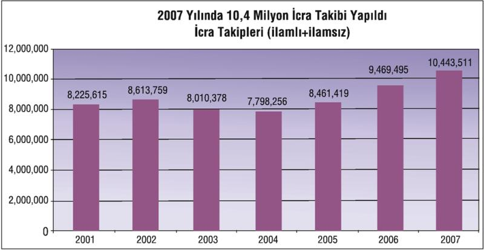

Küresel krizle birlikte şirketlerin mali yapıları da bozuldu. Borç yükü döndürülemezken, batık kredilerde artış başladı. Ayrıca karşılıksız çek, protesto edilmiş senet sayısı ve tutarları hızla arttı.
2002 yılında 60,8 milyar TL olan şirketlerin (ticari unvanı bulunan kuruluşlar) kredi borçları son yedi yıllık dönemde 263 milyar liralık büyüme kaydetti.
Şirketler kesiminin Türkiye'deki mevduat bankaları, kalkınma ve yatırım bankaları ile katılım bankalarına ve bu bankaların teminatıyla dışarıdan aldıkları kredi borçları da Kasım 2009 itibariyle 319,3 milyar lira olarak gerçekleşti.
Yaşanan ekonomik kriz şirketlerin bankalara kredi geri ödemelerinde de 2008 yılından itibaren önemli aksaklıklara yol açmaya başladı.
Bu kredilerin 12,7 milyar TL'lik kısmı batık konumda bulunuyor.
Merkez Bankası'nın sektör kredileri raporuna göre firmaların zamanında ödeyemedikleri için bankaların takibe aldığı kredi tutarı Ağustos 2009 itibariyle 12 milyar lira olarak gerçekleşti.
Batık krediler 2008 ve 2009 yıllarında bir kata yakın artış gösterdi. Ekonomik durgunluğa bağlı olarak söz konusu tutar artmaya devam ediyor.
2003 yılından sonra karşılıksız çıkan çek sayısı hızla artmaya başladı. 2002 yılında 742,9 bin, 2003 yılında 831,3 bin olan protesto edilen senet sayısı 2006 yılında 1 milyon 145 bine yaklaştı.
Siftahsız dükkân kapatan esnafın borcunu ödeyememe eğilimi artarak devam ediyor. Karşılıksız çek sayısı 2007 yılında yüzde 15,2 oranında artarak 1 milyon 324 bine çıktı.
Karşılıksız çek sayısı 2008 yılında ise 2007 yılına göre yüzde 16 artarak 1 milyon 537 bine ulaştı. 2009 yılında ise 1 milyon 994 bine kadar çıkarak rekor kıran karşılıksız çeklerde önceki yıla göre yüzde 29,7 artış yaşandı.

Protesto edilen senetlerin sayısına paralel olarak bu senetlerin toplam tutarı da yıllar itibariyle hızla artarak 2,2 milyar TL'den 2008 yılında 15,7 milyar TL'ye kadar yükseldi.
2003 yılından sonra protesto edilen senet sayısı hızla artmaya başladı. 2002 yılında 499 bin, 2003 yılında 480 bin olan protesto edilen senet sayısı yaklaşık üç kat artarak 2006 yılında 1 milyon 178 bine yaklaştı.
Protesto edilen senet sayısı 2007 yılında yüzde 25 oranında artarak 1 milyon 471 bine çıktı. 2008 yılında ise yüzde 7 artarak 1 milyon 547 bini geçti. 2009 yılında ise yüzde 1,6 oranında artarak 1 milyon 599 bine yükselen protesto edilen senet sayısında yeni bir rekor kırıldı.
Protesto edilen senetlerin tutarı da her yıl rekor üstüne rekor kırıyor. 2002 yılında 816 milyon TL olan protesto edilen senetlerin tutarı, 2006 yılında 4 milyar TL' ye, 2007 yılında ise 5,7 milyar TL'ye ulaştı. 2008 yılında ise 6,8 milyar TL'lik senet protesto edildi.
2009 yılında protesto edilen senetlerin tutarı ise 2008 yılına göre yüzde 15, 1 oranında artarak 7,8 milyar liraya kadar yükseldi.
Protesto edilen senetlerin tutarında son yedi yıllık dönemde 9 katlık bir artış yaşandı.
Borç ödememe eğiliminin önemli bir göstergesi olan icra takipleri yıllık ortalama 10 milyonu aştı. 2007 yılında İcra Müdürlüklerine gelen ilamsız takiplerde bir önceki yıla göre yüzde 10, ilamlı takiplerde ise yüzde 16 oranında artış yaşandı.

2007 yılında icra müdürlüklerine 800 bin 526'sı ilamlı, 9 milyon 642 bin 985'i de ilamsız olmak üzere toplam 10 milyon 434 bin 511 iş geldi.
Son yıllarda yeni kurulan şirket ve ticari unvanlı işyerlerinin sayısı bir önceki yıla göre hızlanarak azalıyor.
2007 yılında yeni kurulan şirket ve ticaret unvanlı işyerlerinin sayısı 2006 yılına göre yüzde 1,1, 2008 yılında ise yüzde 8,3 oranında azaldı.
2009 yılında yeni kurulan şirket ve ticaret unvanlı işyeri sayısı ise geçen yılın aynı dönemine göre yüzde 7,2, kapananların sayısı ise yüzde 8,8 oranında azaldı.
| Kurulan ve Kapanan Şirket ve Ticaret Unvanlı İşyerleri (Adet) | ||||
| Kurulan | Önceki yıla göre değ. (%) | Kapanan | Önceki yıla göre değ. (%) | |
| 2002 | 54.854 | - | 18.661 | - |
| 2003 | 65.298 | 19, 0 | 18.665 | 0, 0 |
| 2004 | 81.459 | 24, 7 | 24.881 | 33, 3 |
| 2005 | 96.058 | 17, 9 | 26.442 | 6, 3 |
| 2006 | 105.222 | 9, 5 | 32.813 | 24, 1 |
| 2007 | 104.023 | -1, 1 | 33.549 | 2, 2 |
| 2008 | 95.404 | -8, 3 | 46.951 | 40, 0 |
| 2009 | 88.522 | -7, 2 | 42.814 | -8, 8 |
Kaynak: TÜİK
Kamunun borçlanma gereksinimi arttığı için bankalar kredi kullandırmak yerine Hazine borçlanma kâğıtlarını tercih etti.
Kamu kesiminin borçlanma gereksiniminin artmaya başlamasına paralel olarak da özel sektöre kullandırılan kredide azalma yaşandı ve mevduatın krediye dönüşüm oranı giderek azaldı.
2007 yılın sonunda yüzde 76,3'e kadar yükselen mevduatın krediye dönüşüm oranı 2008 yılı sonunda yüzde 75,9'a, 2009 yılında da keskin bir düşüş göstererek yüzde 69,1'e kadar indi.
Üretimin, ihracatın ve yurt içi satışların kriz nedeniyle hızla azalması, firmaların ve tüketicilerin kredi geri ödemelerini olumsuz etkiledi. Kredi borcunu zamanında ödeyemediği için bankalar tarafından takibe alınan kredi müşterisi sayısı hızla büyüdü.
Bankaların zamanında tahsil edemedikleri için takibe aldıkları krediler 2009 yılı sonunda 21,4 milyar liraya kadar yükseldi.
Buna göre bankaların müşterilerine kullandırdığı her 100 liralık kredinin 6, 3 lirası batık duruma geldi.